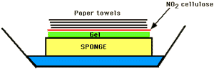
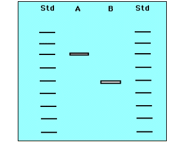

Recombinant DNA Technology Problem Set
Problem 6: Applications
Tutorial to help answer the question
| Restriction endonuclease generated DNA fragments separated by gel electrophoresis and blot transferred onto a membrane filter are probed with a radioactive DNA fragment. This procedure is called: |
Tutorial
The Southern Technique
Transferring DNA fragments to nitrocellulose sheets| DNA fragments are transferred to nitrocellulose sheets where they bind. | |
|
DNA fragments are denatured and separated by gel electrophoresis. Fragments are blotted onto a sheet of nitrocellulose and fixed by heating. Blot is reacted with a radioactive probe of RNA or DNA which binds to complementary DNA. Autoradiography is used to detect radioactive fragments. |
 |
|
The denatures fragments of DNA are fixed by baking.
A radioactive probe is added. It can hybridize with a gene sequence in the DNA. The sheet is rinsed and placed next to X-ray film for autoradiography. |
 |


University of Arizona
Updated: July 15, 1999
Contact the Development Team
http://www.biology.arizona.edu
All contents copyright © 1996-99. All rights reserved.